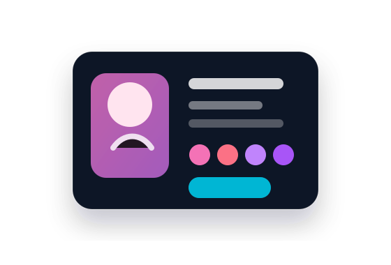
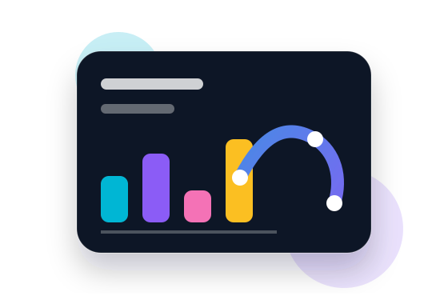
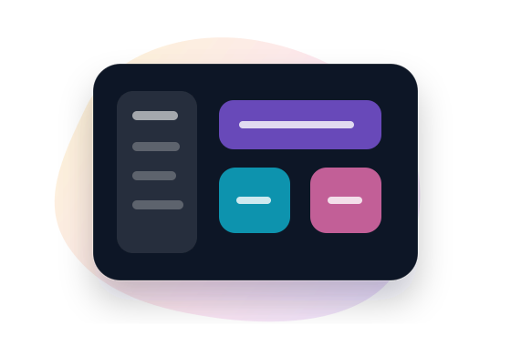

Open to AI/Data, Web Development & STEAM opportunities
Computer Science Graduate • Lebanon
Building practical technology solutions with software, data, and creative education.
I’m Eman Zaarour, a Computer Science graduate with hands-on experience in full-stack web development, AI/data science projects, robotics, and STEAM training for students.
About
A technology profile combining development, data thinking, and student-centered training.
My work connects technical implementation with clear communication: building applications, exploring data insights, and teaching technology concepts through practical projects.
Professional summary
Computer Science graduate with hands-on experience in software development, AI, data science, robotics, and STEAM education. Experienced in developing web applications, machine learning projects, and delivering technical training.
DegreeB.S. Computer Science
UniversityLebanese International University
LanguagesArabic native • English professional
LocationBekaa, Lebanon
Expertise
Professional strengths
Focused areas that match my academic background, project work, and training experience.
Full-stack Web Development
Responsive pages, authentication flows, dashboards, cart/wishlist logic, checkout features, and database-connected PHP/MySQL applications.
AI & Data Science
Data cleaning, visualization, exploratory analysis, machine learning fundamentals, predictive modeling, and insight-focused reporting.
STEAM & Robotics Education
Student-friendly sessions using Scratch, Arduino, Tinkercad, robotics projects, classroom activities, and practical learning materials.
Skills
Technical toolkit
Organized by practical use instead of percentages, so the portfolio stays honest and professional.
PythonJavaJavaScriptPHPCDartSQL
HTML5CSS3Responsive DesignPHPMySQLSQLAuthentication
PandasNumPyScikit-learnMatplotlibData CleaningEDAData VisualizationExcelKoboToolbox
ArduinoTinkercadGit & GitHubMicrosoft OfficeCanvaGoogle WorkspaceMicrosoft Access
Projects
Selected portfolio work

AI Makeup Shopping Website with Virtual Try‑On
Full-stack e-commerce website with authentication, product catalog, cart, wishlist, checkout, admin dashboard, and virtual try-on concept.

Data Science & Machine Learning Project
Cleaned, analyzed, and visualized real-world datasets, then built and evaluated machine learning models for predictive analysis.

Academy Management System
Web-based academy management system with user authentication, course enrollment, certificate generation, and SQL-managed records.
Experience
Practical roles in training, data support, and education.
These roles show my ability to teach, organize technical content, manage educational information, and support learners.
Scratch & Arduino Trainer
Michel Daher Social Foundation
- Delivered 20 weekly hands-on Scratch and Arduino sessions for students aged 13–15.
- Designed engaging STEAM lessons, presentations, and project-based learning activities.
- Guided robotics and programming projects using Scratch, Arduino, and Tinkercad.
Education Volunteer – Data Entry
MAPs
- Managed educational databases using KoboToolbox, Microsoft Excel, and BMA.
- Maintained attendance, assessment, and activity records with confidentiality.
- Prepared reports and supported data validation for educational programs.
Teacher Assistant Intern
Anera & MAPs
- Assisted instructors in educational and STEAM sessions.
- Supported classroom management, student engagement, and learning materials.
Education
Bachelor of Science in Computer Science
Lebanese International University (LIU) • October 2021 – July 2024
BSCS2024
Certifications
Continuous learning
Training across data science, technology education, robotics, IoT, and educational support.
Data Science Program — MDSF
Tech TOT Program — MDSF
STEAM & Special Needs Shadowing
Education Assistant Program
Internet of Things — LIU
TOT – Arduino Programming — MAPs
Arduino for Robotics — LIU
Microsoft Access — MAPs
Arduino Level 1
Workflow
How I approach projects
Understand
Clarify the goal, users, required features, and success criteria.
Design
Create clean structure, responsive layouts, and clear data flows.
Build
Develop practical features using maintainable code and organized files.
Improve
Test, refine, document, and make the final result presentation-ready.
Contact
Let’s connect for projects, internships, or training opportunities.
I’m interested in roles and projects related to AI/data science, web development, educational technology, and STEAM training.